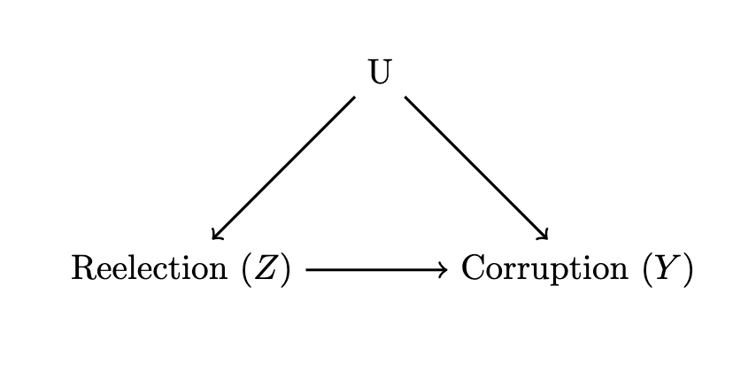
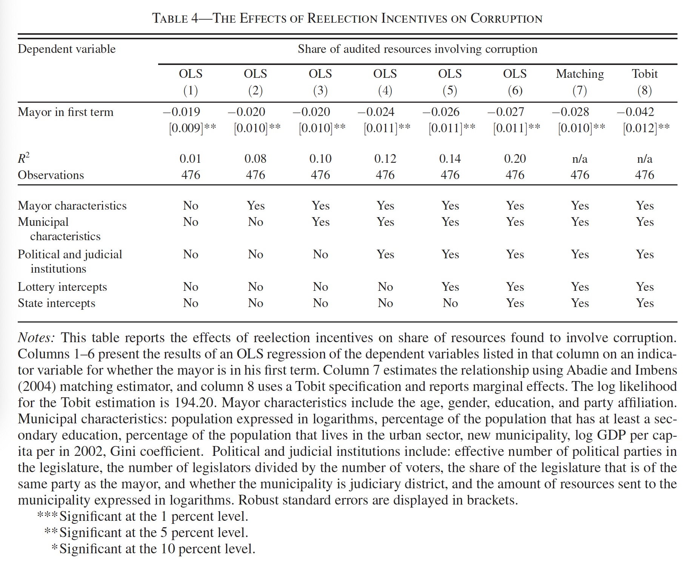

Representation and Accountability I
Assignments
- Two assignments due TODAY at midnight:
Creating a Final Project Git Repo
Idea for Final Research Project
- Please send a Slack DM to both me and Jeremy
Agenda
- Background (Accountability 101)
- Ferraz and Finan, 2011
Democracy, Accountability, and Representation
Przeworski, Stokes, and Manin, 1999
What do we mean by representation?
Acting in the voter’s best interests
What is the claim connecting democracy and representation?
Under democracy, governments are representative because they are elected.
But why?
Mandate view:
Elections serve to select good policy
- Fundamentally prospective
- During campaign parties inform citizens what policies they want to follow and why
- Voters select the best one
- Politicians do what they propose (the platform is the mandate)
Accountability view
Elections serve to hold governments accountable for their past actions
Fundamentally retrospective
Voters retain politicians only when they acted in their best interest
Politicians anticipate this and serve!
Taking stock
Do we feel these mechanisms are plausible?
What might be some issues with these characterizations of representation?
Reconsidering: Some potential pitfalls
Citizens are not omniscient, for better and for worse
Imperfect evaluation of what politicians should do
Imperfect evaluation of whether they did what they ought to have done
Politicians have goals, interests, and values of their own, and monitoring is costly
Pitfalls in the Mandate View
Is it plausible to think governments will do what they propose?
Is it desirable?
Politicians are not legally compelled to abide by their platform in any democratic system! Why?
Pitfals in the Accountability View
Idea is reward or punish depending on their performance
Is it plausible to think citizens have enough information to evaluate politicians?
What if politicians do not value getting reelected
The Vote: Our One Blunt Tool
In the accountability view, voters are retrospective.
- They use the vote to punish
In the mandate view, voters are prospective
- They use the vote to select the best policy / best politicians
In reality, voters want to do both: select good policy and punish bad behavior
But we only have one vote. Can we achieve both goals?
Evidence from Brazil: Ferraz and Finan (2011)
Research question
Broadly: Do institutions affect accountability?
Specifically: Do elections work as a disciplining device?
Reelection Incentives \(\rightarrow\) corruption
Theory
Politicians who can get reelected have fewer incentives to steal funds
Why?
They want to get reelected! To get reelected, they need to serve the citizens.
Voting as a disciplining tool
Case, Data, Hypotheses
Context: Municipalities in Brazil
- Brazilian mayors allowed to run for reelection starting in 2000
Data: Misappropriated Funds
- Random audits of municipalities since 2003
Hypothesis 1: Mayors that can still get reelected will steal less
Hypothesis 2: Especially when the “theft” is very visible
Research Design
- What is the treatment group?
- What is the control group?
- What are plausible threats to inference?
Research Design

Research Design
- Constrain the Comparison
- Compare mayors who barely won and barely lost
- Compare 1st term mayors that later won to 2nd term mayors
- Compare mayors of equal experience
- Compare similar places only
- Test empirical patterns consistent with their story
- Visible vs opaque corruption
- Places with high vs low opposition
Findings

Findings
Mayors who can still run for reelection are less corrupt.
- Around 1.9-4 pp less corrupt than 2nd term mayors
Because around 7.4% of all resources were stolen under 2nd term mayors, a 1.9-4 pp decrease is HUGE and A LOT of money
Results also show that 1st term mayors procure more $ from the fed. gov.
Implications for Representation
That 1st term mayors are less corrupt suggests votes are a good disciplining device
- The accountability theory seems to have empirical support
But… is this evidence that voting does not help select good politicians?
Could both mechanisms be operational?
Policy Implications
Corruption is more pervasive in weakly institutionalized settings
- How to make local governments in those settings more accountable?
Implications for term limits?
Implications for politicians’ salaries?